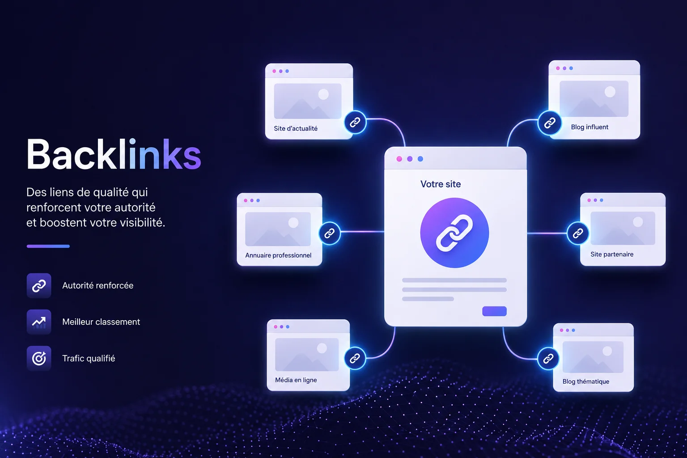

Qu'est-ce qu'un backlink et pourquoi c'est important ?
Un backlink est un lien placé sur un site externe qui pointe vers le vôtre. Pour Google, chaque backlink de qualité est une forme de recommandation — plus vous en obtenez depuis des sources fiables, plus votre site gagne en autorité et en visibilité dans les résultats de recherche.

Pourquoi les backlinks améliorent votre référencement
Google évalue la crédibilité de votre site en partie grâce aux liens qui pointent vers lui depuis d'autres sites. Un lien depuis un annuaire local reconnu, un partenaire sérieux ou un article de presse régionale envoie un signal fort : votre site mérite d'être mis en avant. C'est ce qu'on appelle le netlinking ou la stratégie de liens entrants.
Attention cependant — la qualité prime sur la quantité. Un seul lien depuis un site reconnu dans votre secteur vaut bien plus que dix liens depuis des sites sans rapport ou de mauvaise réputation.
Un backlink de qualité, c'est une recommandation que Google prend au sérieux. — Central Web Agency
Comment obtenir des backlinks naturellement
Il existe plusieurs façons concrètes d'obtenir des backlinks sans recourir à des pratiques risquées :
- Inscrivez votre activité dans des annuaires locaux sérieux : Pages Jaunes, Yelp, Kompass, annuaires de votre secteur d'activité.
- Demandez à vos partenaires professionnels de mentionner votre site sur le leur, et faites de même pour eux.
- Proposez des articles invités sur des blogs ou médias locaux lyonnais — un article bien écrit sur un sujet de votre domaine peut générer plusieurs liens.
- Faites-vous référencer sur les sites de vos fournisseurs ou clients — beaucoup ont une page "nos partenaires".
- Participez à des événements locaux dont les organisateurs publient la liste des participants ou sponsors sur leur site.
- Créez du contenu utile — guides, conseils, infographies — que d'autres sites voudront naturellement citer et partager.
Les erreurs à éviter absolument
Certaines pratiques peuvent faire plus de mal que de bien à votre référencement. Google pénalise les sites qui cherchent à manipuler artificiellement leurs backlinks :
- Acheter des liens en masse sur des plateformes douteuses.
- Participer à des échanges de liens à grande échelle sans lien avec votre activité.
- Utiliser des fermes de liens ou des réseaux privés de blogs (PBN).
La règle est simple : si un lien semble naturel et pertinent pour le lecteur, il est bon pour votre SEO. S'il semble forcé ou artificiel, c'est un risque à éviter.
Le cas particulier du référencement local à Lyon
Pour une activité basée en région lyonnaise, les backlinks locaux ont une valeur particulière. Un lien depuis un media régional comme Le Progrès, un annuaire de commerçants lyonnais, ou le site d'une association professionnelle de l'Isère ou du Rhône renforce votre positionnement sur les recherches géolocalisées — exactement là où se trouvent vos clients potentiels.
En local, un lien depuis un acteur reconnu de votre ville vaut autant qu'une dizaine de liens génériques. — Central Web Agency
Par où commencer concrètement ?
Si vous débutez, voici un plan d'action simple et efficace :
- Créez ou complétez votre fiche Google Business Profile — c'est le premier backlink à obtenir.
- Inscrivez-vous sur 3 à 5 annuaires sérieux dans votre secteur et votre région.
- Contactez 2 ou 3 partenaires pour proposer un échange de mentions mutuelles.
- Publiez régulièrement du contenu utile sur votre site — articles, conseils, études de cas — pour attirer des liens naturellement au fil du temps.
Cette approche progressive et qualitative est la plus pérenne. Les résultats ne sont pas immédiats, mais les gains SEO obtenus sont durables et solides.